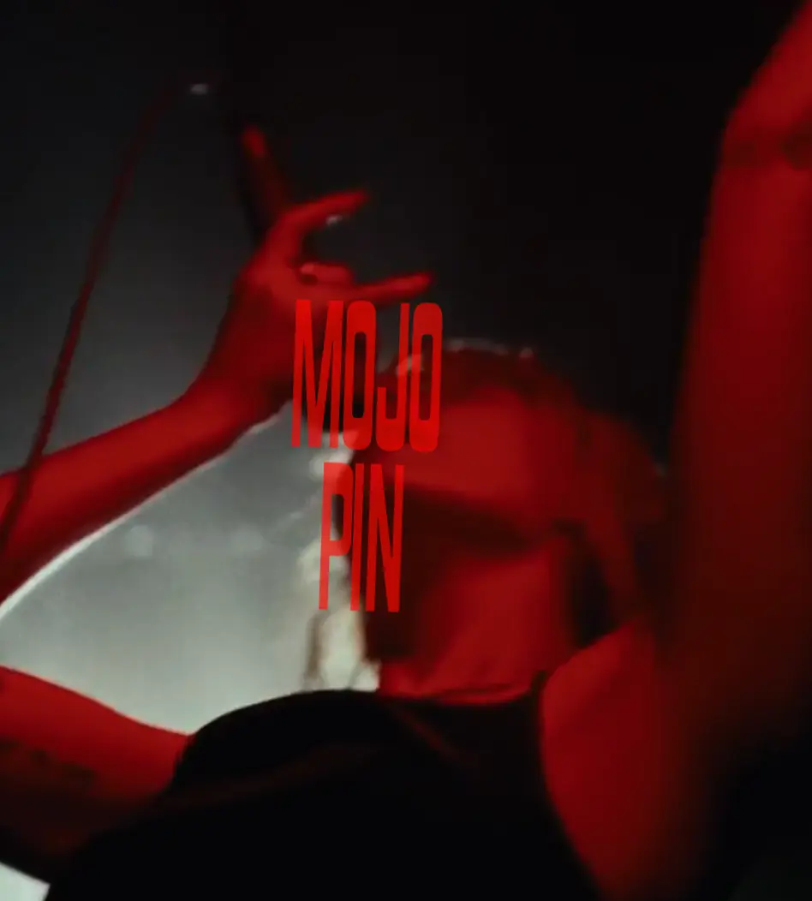

I dette tema arbejdede jeg med grundlæggende webdesign og lærte at udvikle responsive websites i HTML og CSS med afsæt i designarbejde fra Figma.

I UX/UI-forløbet arbejdede jeg med design af brugergrænseflader med fokus på brugerbehov. Jeg brugte interviews, brugertest og Figma til design samt arbejdede med responsivt design, accessibility og etik.
I dette tema arbejdede jeg med interaktive brugergrænseflader ved hjælp af JavaScript og SVG-grafik. Samtidig arbejdede vi med tilgængelighed og etiske overvejelser i digitale løsninger.
I dette tema arbejdede jeg med grundlæggende indholdsproduktion, fra præproduktion og fotografering med smartphone til postproduktion og Lottie-animationer.